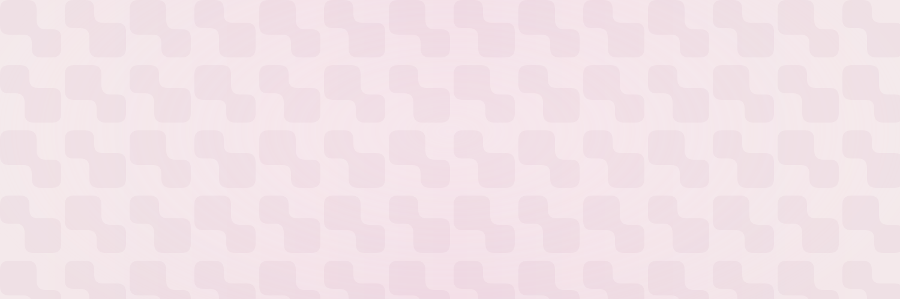
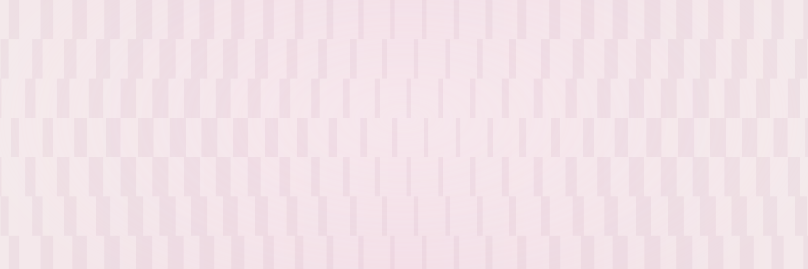
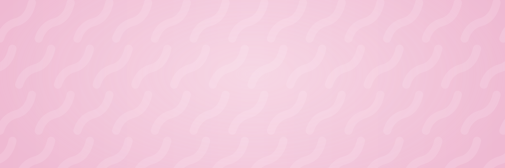
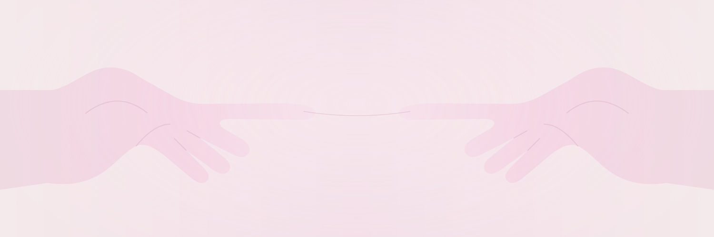

01 / Soft connectionsBarely visible rounded forms meet through narrow organic bridges.SVG ↓PNG ↓
02 / Quiet frequencyOffset vertical bars dissolve into a low-contrast optical wave.SVG ↓PNG ↓
03 / Common currentSoft, linked organic strokes emerge gently from a pink field.SVG ↓PNG ↓
04 / Nearly thereA quiet matrix of softly connected blocks, almost the same color as the background.SVG ↓PNG ↓
06 / Almost touchingTwo halftone hands reach toward a shared point, softly rendered in the brand palette.SVG ↓PNG ↓
08 / Reaching togetherTone-on-tone sculptural hands share a fine thread of connection.SVG ↓PNG ↓